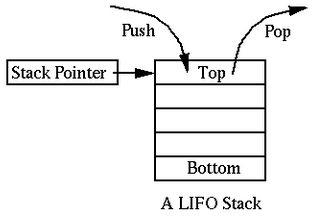

CS2440: Computer Science II
Stacks & Queues
CS2440: Computer Science II
Stacks & Queues
Stacks
Specification
push(x)- insert the object $x$ onto the top of the stackpop()- remove and return object on top of the stackpeek()- return object on top of stacksize(),isEmpty()

- Last-in, first-out (LIFO)
- Operations only happen on one end of the data structure
Stacks
💡Try It: Follow the structure and output of a stack given the following operations
push(5)push(3)pop()push(2)push(8)pop()pop()push(9)push(1)
pop()push(7)push(6)pop()pop()push(4)pop()pop()pop()
Stacks
❓ Consider a series of push() and pop() operations in which you pushed the integers $1, 2, 3$ (in that order).
- Could you pop them off in order $1, 2, 3$?
- Could you pop them off in order $3, 2, 1$?
- Are there any orderings that wouldn't be possible?
- What about with the sequence $1, 2, 3, 4$?
Stacks
Consider the following method:
public static <T> Stack<T> popAndPush(Stack<T> stack)
{
Stack<T> newStack = new Stack<T>();
while (!stack.isEmpty())
newStack.push(stack.pop());
return newStack;
}
❓ What is returned when given a stack with values $\{5, 3, 1, 2, 4\}$ with $4$ at the top?
Stacks
❓ What does the following method do?
public static String mystery(int num, int b)
{
String digitChar = "0123456789ABCDEF";
Stack<Character> stack = new Stack<Character>();
String answer = "";
do {
stack.push(digitChar.charAt(num % b));
num /= b;
} while (num != 0);
while (!stack.isEmpty()) answer += stack.pop();
return answer;
}
Stack Implementations: Arrays
- Suppose we choose to implement our stack using an array
- We want to minimize the amount that elements need to shift
- Where would be the best location for the top of the stack?
- What fields would we need?
private Object[] data— elements in stackprivate int manyItems— count of elements- What invariants would we need?
- The number of items is stored in
manyItems - The items in the stack are stored in
data, with the bottom of the stack atdata[0]and the top of the stack atdata[manyItems-1]
Stack Implementations: Arrays

public E pop()
{
manyItems--;
return data[manyItems];
}
public void push(E elem)
{
data[manyItems] = elem;
manyItems++;
}
public E peek()
{
return data[manyItems - 1];
}
Stack Implementations: Arrays
- Consider how you might implement the following methods, and give their time complexities
public ArrayStack()public ArrayStack(int initialCapacity)public ArrayStack clone()public boolean isEmpty()public int size()public void ensureCapacity(int minimumCapacity)public int getCapacity()public void trimToSize()
Stack Implementations: Linked Lists
- Suppose we choose to implement our stack using a linked list
- Linked lists can grow and shrink easily.
- No need for
ensureCapacity(),getCapacity(), ortrimToSize() - Where would be the best location for the top of the stack?
push()andpop()from the head of the linked list is easiest- What fields would we need?
private Node<E> top— top of stackprivate int manyItems— count of elements
Stack Implementations: Linked Lists

public E pop()
{
E elem = top.data;
top = top.next;
manyItems--;
return elem;
}
public void push(E elem)
{
top = new Node<E>(top, elem);
manyItems++;
}
public E peek()
{
return top.data;
}